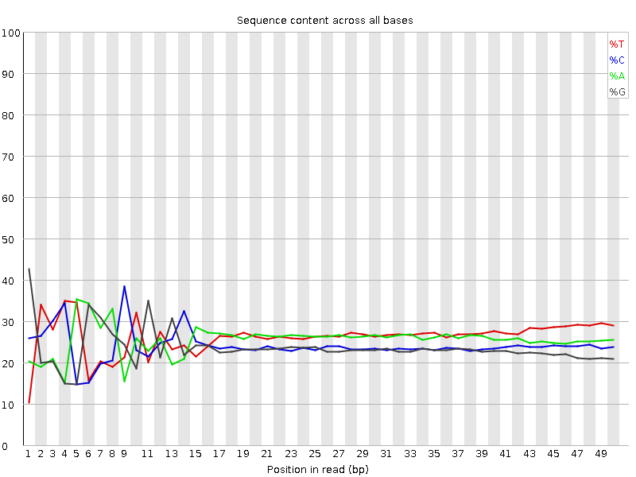

Introduction to ATAC-Seq data analysis
Contributors
Authors: 
 Florian Heyl
Florian Heyl Lucille Delisle
Lucille Delisle
Questions
What is ATAC-Seq?
What are the quality parameters to check for each dataset?
How to analyse ATAC-Seq data?
Objectives
Understand ATAC-Seq
Quality Parameters for ATAC-Seq
Understand Peak calling for ATAC-Seq
last_modification Published: Apr 8, 2021
last_modification Last Updated: Aug 8, 2024
Where does my data come from?
![Low resolution image from a paper with two subfigures a and b. In A closed and open chromatin exists, then tn5 transposase attaches to open chromatin regions. these fragments are amplifiable and become amplified and sequenced. In subfigure B open chromatin is shown as two strands in black, with a common end in grey on both strands' both ends. Adapter 1 and 2 are attached to 5' ends. this is extended at 72° for 5 minutes, PCR'd using barcoded primers, and then the final product is created for sequencing which has open chromatin regions, surrounded by a common end, and then the adapters with a barcode on adapter 2.](../../images/atac-seq/atac.jpg)
Buenrostro et al. 2013 Nat Methods
- Usage of hyperactive Tn5 transposase to insert sequencing adapters into open chromatin regions.
- After adapter attachment the DNA is sheared by the Transposase itself.
Speaker Notes
- ATAC-seq uses a transposase to insert sequencing adapters into accessible regions.
- On the left figure you have the nucleosomes, histones, which are represented by grey circles.
- The transposase will insert sequencing adapters at DNA depleted of nucleosomes.
- Fragments are defined as a piece of DNA flanked by two sequencing adapters.
- We can distinguish three types of fragments.
- Those with no nucleosome in between which are called nucleosome-free fragments.
- Those with at least one nucleosome in between buth whose length is below 800bp.
- Finally, those whose length is too big (bigger than 800bp).
- They will not be correctly amplified by PCR and/or not efficiently sequenced by illumina sequencers.
- Because of the second type of fragments,
- it is important to build coverage around the insertion sites and not fully between the mates of the pairs.
- If the pairs are larger apart than 170bp you don’t know if there was a nucleosome between them.
Characteristics of ATAC-Seq design
- Typically you have at least two biological replicates.
- You may also have a control. A control could be purified DNA, which has no more nucleosomes, treated with Tn5. It is sequenced along with the ATAC sample.
- ATAC-Seq is usually paired-end sequencing. This way is easier to idenfiy a nucleosome-free region. That is why you need both reads.
Speaker Notes
- Here are the main characterstics of the design of a good ATAC-seq experiment.
- You will usually have biological replicates.
- You may also have a control.
- If you want to distinguish between the two types of fragments described in the previous slide you want to have paired-end sequencing.
How to analyze ATAC-Seq data?
Speaker Notes
- How to analyze ATAC-seq data?
Check the Insert Size
.image-50[
 ]
]
- Typical insert size of 50-300 bp.
- The first peak of 50 basepairs correspond to nucleosome-free regions.
- The second peak that is a bit less than 200 basepairs corresponds to a single nucleosome.
Speaker Notes
- A good indication of the quality of the ATAC-seq data is given by the profile of insert sizes.
- We expect to see a high peak centered around 50bp which corresponds to nucleosome-free fragments and a second bump around 200bp corresponding to fragments exactly around a nucleosome.
- The third one (around 400bp) is where Tn5 inserted around two adjacent nucleosomes and the fourth one (around 600bp) is where Tn5 inserted around three adjacent nucleosomes.
Do not worry about a nucleotide bias

- Your experiment might have a nucelotide bias because of the transposase treatment (Brian Green et. al. 2012)
Speaker Notes
- If you do a QC for nucleosome bias. You expect to find one bias because of the transposase treatment.
Filtering Reads
- Filter for uniquely mapped reads with end-to-end alignment.
- Remove reads mapping to mitochondrial DNA.
- Remove PCR duplicates.
Speaker Notes
- ATAC-seq analysis require filters which are commong to other applications like the filtering of uniquely mapped reads or PCR duplicates.
- End-to-End alignement is probably useful because you are interested in the exact open chromatin regions.
- Other filtering steps are specific to ATAC-seq.
- ATAC-seq datasets usually contain a large percentage of reads that are derived from mitochondrial DNA.
- Since there are no ATAC-seq peaks of interest in the mitochondrial genome you can discard those reads.
- Especially because there is no nucleosome on the mitochondrion, so it makes this part of the genome very sensitive to Tn5.
Peak Calling
.image-50[
 ]
]
- When Tn5 cuts an accessible chromatin locus it inserts adapters separated by 9 basepairs Kia et al. 2017.
- You would prefer a peak caller taking into consideration that the adapters are separated by 9 basepairs.
- Because the ATAC-seq fragments are mixture of nucleosome-free fragments and fragments with nucleosome between mates, you need to adapt the parameters of peak calling algorithms.
- We recommand MACS2 with adapted parameters.
Speaker Notes
- During the process, the Tn5 introduces a 9bp duplications.
- This means that to have the read start site reflect the centre of where Tn5 bound, the reads on the positive strand should be shifted 4 bp to the right and reads on the negative strands should be shifted 5 bp to the left as in Buenrostro et al. 2013.
- While the previous steps were very close to a ChIP-seq analysis.
- The peak calling need to be performed with care.
- Indeed, to get peaks at accessible regions and not on nucleosome, the parameters of the peak calling need to be adapted to use the 5 prime position of the read.
Overview
![Schematic of the ATAC-Seq workflow. dataset R1 and R2 are run through FastQC which points to a cloud labelled "QC Measures". The two datasets also go through cutadapt to produce trimmed r1 and r2. This goes to bowtie2 which produces alignments, and another cloud labelled QC measures. The alignments output goes to bamtools filter to produce filtered alignments, which then goes to mark duplicates to produce a filtered without duplicate alignments file. This is sent to MACS2 which produces coverage and peaks outputs. Those, in combination with annotations for the genome are sent to deepTools for heatmaps summarizing multiple regions, and pyGenomeTracks for tracks displaying a specific region.](../../images/atac-seq/ATACWF.svg)
- This is an overview of ATAC-Seq data analysis.
Speaker Notes
- This is an overview of the workflow which is used in the tutorial.
- The preprocessing with cutadapt.
- The mapping with bowtie2.
- The different filtering steps.
- The peak calling.
- The different visualisations.
Thank you!
This material is the result of a collaborative work. Thanks to the Galaxy Training Network and all the contributors! Tutorial Content is licensed under
Creative Commons Attribution 4.0 International License.
Tutorial Content is licensed under
Creative Commons Attribution 4.0 International License.